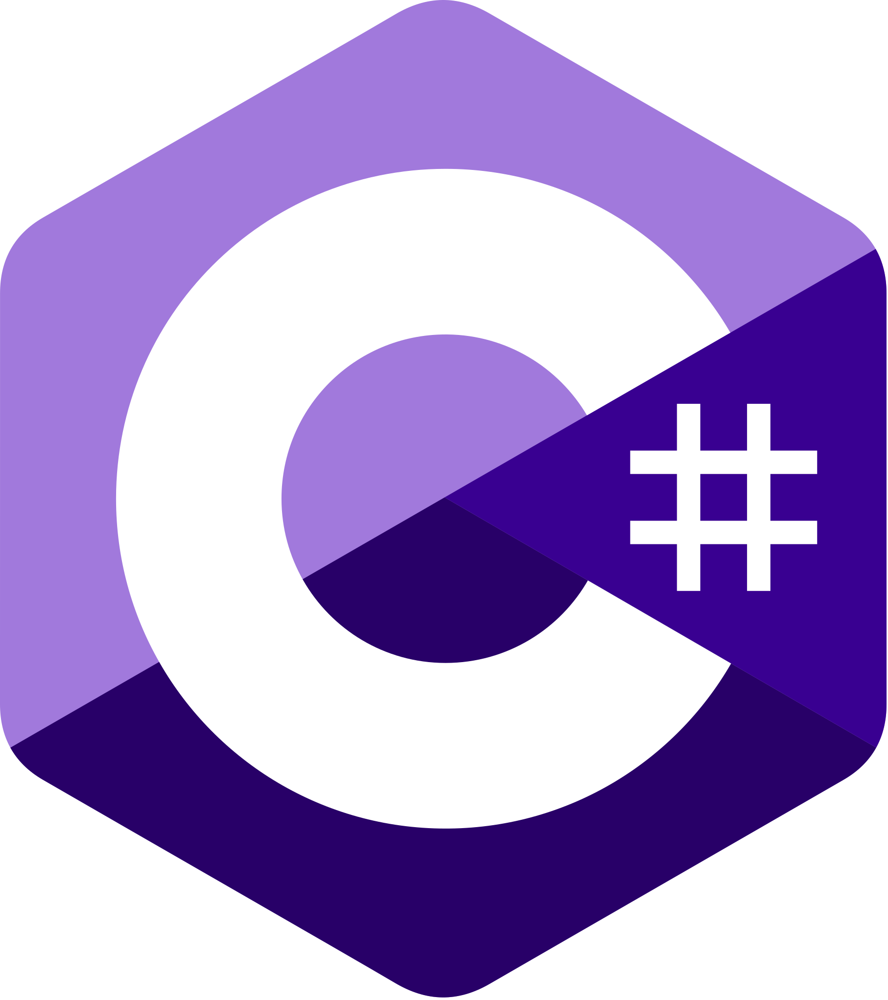
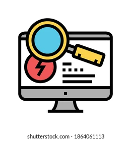
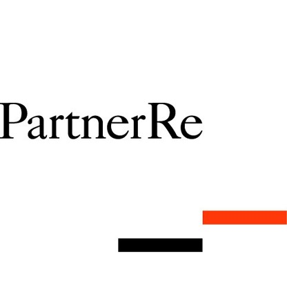

Découvrez mes compétences
HTML
CSS
SQL
PHP

C#
C
Java
GLPI

Actuellement en deuxième année de BTS SIO (Services informatiques aux organisations), j'ambitionne de devenir Développeur Informatique en continuant les formations jusqu'au Bac +5. Vous trouverez sur cette page, mes compétences, mes formations, mes expériences professionnelles ainsi que mon contact.


Novembre à Décembre 2025
Déploiement des Laptops, Gestion d’inventaire, Tickets d’incident et Participation au projet de renouvellement des Laptops

Mai à Juillet 2024
Création de site e-commerce, fonctionnalités, sécurité et conception d'une base de données.
Février à Mai 2023
Déploiement des Laptops, Gestion d’inventaire, Tickets d’incident.
Mars à Avril 2021
Maintenance des machines.
Mars à Juin 2018
Service informatique (support, préparation de poste de travail aux nouveaux utilisateurs).
Octobre à Novembre 2017
Accueil des visiteurs, renseignements et guides.
Mai 2027
Découverte du métier, entraînement, initiation aux équipements militaires.
Février 2016
Stage découverte du service informatique.
Septembre 2025 - Juin 2026
2ème Année BTS SIO Option "Solutions Logicielles et Applications Métiers" - En cours d'obtention
Septembre 2024 à Juin 2025
1ère année BTS SIO Option "Solutions Logicielles et Applications Métiers"
Octobre 2022 à Juin 2023
Baccalauréat Professionnel Systèmes Numériques Option C (RISC) - Diplômé mention bien
2020 - 2021
Niveau « Titre professionnel de technicien d’assistance en informatique »
2017 - 2019
1ère et 2ème année de Bac Professionnel Systèmes Numériques Option C (RISC)
Site E-Commerce fictif avec les fonctionnalités
Base de données sur C#

Cliquez sur l'image pour l'agrandir
Exploiter des référentiels, normes et standards adoptés par le prestataire informatique
Télécharger (.pdf)Mettre en place et vérifier les niveaux d’habilitation associés à un service
Télécharger (.pdf)Vérifier le respect des règles d’utilisation des ressources numériques
Télécharger (.pdf)Traiter des demandes concernant les services réseau et système, applicatifs
Télécharger (.pdf)Participer à la valorisation de l’image de l’organisation sur les médias numériques en tenant compte du cadre juridique et des enjeux économiques
Télécharger (.pdf)Référencer les services en ligne de l’organisation et mesurer leur visibilité
Télécharger (.pdf)Participer à l’évolution d’un site Web exploitant les données de l’organisation
Télécharger (.pdf)Mettre en œuvre des outils et stratégies de veille informationnelle
Télécharger (.pdf)Validation des acquis et notions de base en développement orienté objet.
Télécharger (.pdf)Profil Linkedin : www.linkedin.com/in/benoit-troude
Email : benoit.troude1@gmail.com
Téléphone : +33 6 59 46 62 82